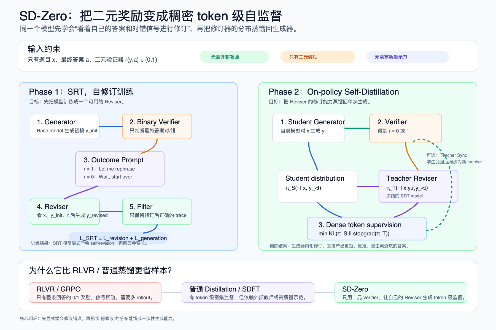

Self-Distillation Zero 精读
本文目录 37 个章节 · 展开查看
阅读日期：2026-04-29
论文标题：Self-Distillation Zero: Self-Revision Turns Binary Rewards into Dense Supervision
作者：Yinghui He, Simran Kaur, Adithya Bhaskar, Yongjin Yang, Jiarui Liu, Narutatsu Ri, Liam Fowl, Abhishek Panigrahi, Danqi Chen, Sanjeev Arora
arXiv：2604.12002v1, 2026-04-13
链接：arXiv Abs，PDF
资料版本：arXiv PDF，SHA256 7042d4d43e7b9e4858fc127a353d39fae91b29d302a054d3e2c7de4e30ac8d36
资料中的 PDF 哈希为阅读时留存。下文按论文 v1 的设定，分别说明模型角色、条件输入、训练目标与实验范围。
一图看懂 SD-Zero

架构图的适用范围
图中的 在 teacher 上下文里简写了对错提示 ；“RLVR 只有 0/1 奖励”等比较限于本文基线设置。Teacher 还需要额外前向计算，图中没有展示这部分成本。
一句话结论
SD-Zero 的核心想法是：不要只拿最终答案对错做 RL，也不要依赖外部 teacher 或高质量解题过程，而是先训练模型学会“看着自己的初稿和二元对错信号进行修订”，再把这个修订器在 token 级给出的分布蒸馏回生成器。这样，原本稀疏的 binary reward 被模型自己转化成稠密 token-level supervision。
我对这篇论文的判断是：
- 最有价值的点是把“错误尝试”保留下来。 RFT/STaR 类方法通常过滤掉错误样本，只学正确 trace；SD-Zero 反过来把错误初稿作为条件，让模型学会从错误到正确的转化。
- 它不是纯 self-correction prompt，而是把 self-revision 写进参数。 Phase 1 训练模型显式修订，Phase 2 再把显式修订蒸馏成更短、更主动的单次生成。
- 它把 RLVR 的 sparse reward 和 distillation 的 dense supervision 接上了。 本文基线主要使用整条回答的二元 outcome reward；SD-Zero 的 Reviser 提供 token 级分布差异。RLVR 本身并不限于二元奖励，分布差异也不等同于可靠的逐步正确性标注。
- 实验结果比较干净。 在 Qwen3-4B-Instruct 和 Olmo-3-7B-Instruct 上，SD-Zero 在同样问题集和近似 sample budget 下超过 SFT、RFT、GRPO、SDFT。
- 边界也明确。 当前只在 math/code 这种可验证任务上成立；对 thinking model 和不可验证任务如何扩展，论文只给了初步观察。
1. 背景：为什么需要 SD-Zero
可验证任务的后训练大致有两类路线：
- 本文采用的 RLVR / GRPO 设置：使用 binary outcome reward，例如最终答案对不对。优点是信号便宜、适用广；缺点是信号稀疏，不知道哪个中间步骤错了，需要大量 rollout 比较。
- Distillation / SFT / SDFT：能提供 token 级稠密监督。优点是样本效率高；缺点是通常依赖外部 teacher、高质量 demonstrations 或 gold reasoning traces。
SD-Zero 问的是：
能不能只用模型自己的初稿和最终对错信号，让模型自己产生 token 级监督？
答案是用一个模型扮演两个角色：
- Generator：先对题目生成一个初始回答。
- Reviser：看到题目、初始回答、以及这个回答是否正确后，生成修订后的回答。
然后把 Reviser 的 token 分布作为 teacher signal，蒸馏回 Generator。
2. 算法主线
SD-Zero 分两个阶段：
- Phase 1：Self-Revision Training, SRT
- Phase 2：On-policy Self-Distillation via Revision Feedback
2.1 基本设定
训练数据是：
其中：
x_i是题目。a_i是最终答案。- 没有 gold solution。
- 有一个 binary verifier：
如果模型回答 y 的最终答案匹配 a，奖励为 1，否则为 0。
2.2 Phase 1：SRT，让模型学会修订
对每个题目 x，先从当前模型采样初始回答：
然后用 verifier 得到：
将数值结果 转成给模型看的文本提示，我们把这段提示定义为 。它告诉 Reviser 刚才的回答是否正确，作为额外上下文，而不是一段标准解题过程。根据结果构造：
if r = 1:
"Let me rephrase the above solution."
if r = 0:
"Wait, this response is not correct, let me start over."
让同一个模型生成修订回答：
只保留修订后正确的 trace：
这里最关键的是：错误初稿没有被丢掉，而是作为 Reviser 的上下文。模型学到的不是“模仿正确答案”，而是“基于我刚才错在哪里，重新生成一个正确答案”。
2.3 SRT 训练目标
SRT 同时训练两个能力。
Revision loss
给定 x, y_init, P_r，生成 y_revised：
这里上下文已经给出题目、初稿与对错提示，损失只要求模型提高正确修订回答的条件概率。序列 log-prob 是回答 token 的条件 log-prob 之和，所以它提供逐 token 的训练信号，让模型学会当 Reviser。
Generation loss
给定 x，生成整个自修订 trace：
它把修订行为也写入 standalone generation，让模型在只看到题目时也能主动检查和修正。
总目标：
论文的 ablation 显示这两个 loss 互补：
- 只用
L_generation，生成能力还行，但修订能力弱。 - 只用
L_revision，first-attempt 准确率为 62.1%，低于完整 SRT 的 66.7%，但仍高于 base 的 59.6%；不能说它相对 base 下降。 - 两者联合在该消融中表现更好；单独目标也能高于 base，不能把联合目标说成获得任何提升的必要条件。
2.4 Phase 2：把 Reviser 蒸馏回 Generator
Phase 1 后得到一个 SRT model。它已经会显式自修订，但有一个问题：回答变长，常出现 “Wait, this is wrong. Let me start over.” 这样的显式回退。
Phase 2 的目标是把这种显式修订内化成一次性生成能力。
设：
- Student / Generator 是当前训练中的模型
πθ。 - Teacher / Reviser 是冻结的 SRT model
πθSRT。
对每个题目：
- Student 先生成 on-policy 回答：
- Verifier 给出 binary reward：
- Teacher Reviser 看到
x, y, P_r，输出 token 分布：
- Student 只看到正常生成上下文，输出：
- 用 KL 让 Student 匹配 Teacher：
这就是论文说的：
binary reward -> dense token-level self-supervision
这里 是同一条 student 已采样回答的前缀；teacher 在这些前缀上做 teacher-forced 分布评估，主流程不需要额外自回归生成一整条 revision。该 KL 的方向为 student 到 teacher，优化时 teacher 与已采样 token 序列停止梯度。
Teacher 的额外上下文是“学生刚才答了什么、对还是错”。Student 最终没有这些额外上下文，但通过 KL 蒸馏学会把修订能力内化到普通生成里。
2.5 Teacher Synchronization：迭代自进化
论文还做了一个进一步实验：Phase 2 训练后，学生模型不仅生成变强，revision capability 也变强。于是可以把新的学生同步成新的 teacher，继续下一轮 self-distillation。
流程是：
SRT model as teacher
-> train student with self-distillation
-> student improves as generator and reviser
-> sync teacher = improved student
-> continue self-distillation
OpenR1-Math 上，第一轮 Self-Distillation 到约 400 step 后趋于平台；同步 teacher 后第二阶段又带来至少 3 个百分点提升，说明这个闭环有继续自举的可能。
3. 和已有方法的关系
| 方法 | On-policy | Dense supervision | Teacher | Teacher 能否看错误尝试 |
|---|---|---|---|---|
| SFT / 普通蒸馏 | 否 | 是 | 外部 teacher / gold demo | 不适用 |
| On-policy Distillation | 是 | 是 | 外部 teacher | 通常不看 |
| 本文 RLVR / GRPO | 是 | 二元 outcome reward | 无 | 不适用 |
| 本文 SDFT 基线 | 是 | 是 | self | 使用 demonstration 作为 privileged context |
| SDPO | 是 | 是 | self | 可使用运行错误等 rich feedback，不能概括为只看高质量 demo |
| SD-Zero | 是 | 是 | self | 是 |
SD-Zero 的突出设计是用 SRT 训练修订能力，再让 teacher condition on wrong attempt 与二元反馈。但“利用错误尝试”并非它独占：SDPO 原论文也让 self-teacher 利用反馈理解失败，不应把它与 demonstration-only 方法混为一谈。它不是让模型直接模仿某个更强 teacher 的正确答案，而是让模型看见自己错过的轨迹，然后学习“怎样改”。
这也是它和 RFT 的关键区别：
- RFT 只保留正确 self-generation。
- SD-Zero 保留错误初稿，并要求模型把错误初稿修成正确答案。
4. 实验设置
4.1 模型
论文主要使用两个 instruct model：
- Qwen3-4B-Instruct
- Olmo-3-7B-Instruct
训练采样：
- temperature = 0.7
- 训练阶段 16K token limit
- 评测阶段 32K token limit
- 结果报告 avg@8
4.2 数据
分别在 math 和 code 两个领域训练：
- OpenR1-Math：选 15K competition / olympiad level math problems。
- Codeforces：cpp subset 7.5K + Python subset 7.5K。
Phase 分配：
- SRT：6K self-revision traces。
- Self-Distillation：9K additional question-answer pairs。
4.3 评测
评测包含 8 个 benchmark：
- AIME24
- AIME25
- HMMT25
- AMOBench
- OpenR1-Math
- MATH
- Codeforces
- LiveCodeBench
4.4 Baselines
所有 baseline 使用相同 15K question set：
- SFT：用 DeepSeek-R1 高质量 demonstrations。
- RFT：rejection fine-tuning，只训练正确 self-generated traces。
- GRPO / DAPO：二元 correctness reward。
- SDFT：on-policy self-distillation，用高质量 demonstrations 作为 privileged context。
5. 主结果
5.1 Avg@8
Qwen3-4B-Instruct：
| 方法 | Avg |
|---|---|
| Base | 49.8 |
| SFT | 50.0 |
| RFT | 54.3 |
| GRPO | 53.1 |
| SDFT | 51.2 |
| SRT | 57.6 |
| SD-Zero | 60.3 |
Olmo-3-7B-Instruct：
| 方法 | Avg |
|---|---|
| Base | 41.1 |
| SFT | 42.4 |
| RFT | 46.7 |
| GRPO | 44.8 |
| SDFT | 43.4 |
| SRT | 50.3 |
| SD-Zero | 51.5 |
解读：
- Phase 1 SRT 已经超过所有 baseline。
- Phase 2 Self-Distillation 在 SRT 基础上继续提升。
- 相比 base，Qwen 提升
+10.5，Olmo 提升+10.4。 - 相比最强 baseline RFT，Qwen 提升
+6.0，Olmo 提升+4.8。
5.2 哪些 benchmark 提升最大
Qwen3-4B-Instruct 上：
- HMMT25：Base 26.7 -> SD-Zero 45.4
- AIME25：45.8 -> 60.0
- LiveCodeBench：61.8 -> 82.6
- AMOBench：9.8 -> 16.0
Olmo-3-7B-Instruct 上：
- HMMT25：25.0 -> 40.4
- LiveCodeBench：32.4 -> 57.8
- AIME25：42.1 -> 53.8
- AMOBench：1.3 -> 5.5
这说明 SD-Zero 特别适合“模型会尝试，但中间容易走错”的任务。它不是单纯记答案，而是在训练过程中学会更有效地定位和修复推理错误。
5.3 Pass@8
论文附录还给出 math Pass@8：
Qwen3-4B-Instruct：
| 方法 | Avg |
|---|---|
| Base | 66.7 |
| RFT | 69.8 |
| GRPO | 65.4 |
| SRT | 70.4 |
| SD-Zero | 72.5 |
Olmo-3-7B-Instruct：
| 方法 | Avg |
|---|---|
| Base | 62.3 |
| RFT | 65.7 |
| GRPO | 63.1 |
| SRT | 68.4 |
| SD-Zero | 70.8 |
Pass@8 提升说明在该采样设置下，8 次采样至少答对一次的概率更高；它支持正确答案覆盖改善，但仅凭这一指标不能证明“获得新推理能力”、排除偶然性，或完全分离分布变尖与探索变化。
6. 为什么 SRT 有效
SRT 的数据结构是：
错误或正确初稿 -> 对错信号 -> 修订后正确答案
它比 RFT 多了一个关键监督：
- RFT 学的是“正确答案长什么样”。
- SRT 学的是“我这类错误应该怎么改成正确答案”。
论文的 Generate-then-Revise 实验很直观：
| 方法 | First Attempt Acc | Revised Attempt Acc | Correction Rate | First Tokens | Revised Tokens |
|---|---|---|---|---|---|
| Base | 59.6 | 60.7 | 2.7 | 3708 | 5098 |
| GRPO | 65.2 | 66.9 | 4.9 | 4432 | 5499 |
| SDFT | 63.3 | 64.7 | 3.8 | 3630 | 5099 |
| SRT | 66.7 | 71.7 | 15.0 | 8458 | 8137 |
| SD-Zero | 68.3 | 73.6 | 16.7 | 3518 | 3314 |
SRT 让模型的修订能力明显增强：Correction Rate 从 base 的 2.7% 到 15.0%。但 SRT 的 first attempt 很长，说明模型学会了显式 backtracking。
SD-Zero 的 Phase 2 把这个显式 backtracking 压回生成器：Correction Rate 继续升到 16.7%，同时 first attempt token 从 SRT 的 8458 降到 3518。
7. Self-Distillation 如何产生 token 级监督
论文把 Self-Distillation 的 KL 拆成 token-wise terms：
当 r = 0，也就是初始回答错了，Reviser 的分布会在少数关键 token 上和 Generator 拉开很大距离。论文案例中这些位置可能对应：
- 错误的几何/代数假设。
- 错误的分支选择。
- 应该改用另一种解法的转折处。
当 r = 1，也就是初始回答正确，Reviser 的信号更平滑，更多是在保持答案、压缩冗余、重述正确逻辑。
据此可把 Reviser 信号解释为以下两种作用，但它不是错误定位的形式化保证：
- localize error：定位哪些 token 附近是错误关键点。
- redirect probability：把概率质量转向更合理的后续推理。
这有点像不用训练单独 PRM，就从同一个模型的 Reviser 中获得隐式 process-level / token-level reward。
8. 为什么 Phase 2 重要
只看准确率，SRT 已经很强。但 Phase 2 仍然是 SD-Zero 的关键，因为它解决两个问题。
8.1 推理效率
SRT 模型会显式自我修正，回答非常长。Phase 2 后：
- 平均 response length 大约减半。
- 显式 self-revision keywords 比例下降。
- 准确率继续提升。
论文的解释是：模型从“显式说出 Wait, this is wrong”变成“提前避开这个坑”。
8.2 训练样本效率
SRT 构造数据很贵，因为需要多次采样和过滤：
- 10K 初始回答。
- 约 5K correct + 5K incorrect。
- 每个初稿生成 3 个 revision。
- 过滤后得到 6K 正确 revision traces。
Phase 2 则每题只需要一个 on-policy response，再由 frozen Reviser 给 token 分布监督。论文给的 generation budget：
| 方法 | questions | generations |
|---|---|---|
| RFT | 15K | 60K |
| GRPO | 15K | 60K |
| SDFT | 15K | 60K |
| SRT phase | 6K retained | 40K generated |
| Self-Distillation phase | 9K | 9K |
| SD-Zero total | 15K | 49K |
token budget 也与 RFT/GRPO 近似同量级：
- RFT/GRPO 约 222M sampling tokens。
- SD-Zero 总 sampling tokens 上界约 224.5M。
- SD-Zero training forward tokens 上界约 219M。
在论文报告的近似采样预算下，SD-Zero 得到更强表现。但 sampling tokens、training forward tokens 不等于 FLOPs 或墙钟时间；teacher 的额外前向、较长条件前缀和反向开销都需计入，不能据此宣称严格等算力比较。
9. 关键消融
9.1 两个 SRT loss 在该实验中互补
Qwen3-4B-Instruct：
| 方法 | Average Generation Acc | First Attempt | Revised Attempt | Correction Rate |
|---|---|---|---|---|
| Base | 49.8 | 59.6 | 60.7 | 2.7 |
| SRT full | 57.6 | 66.7 | 71.7 | 15.0 |
| SRT, only L_generation | 56.4 | 65.4 | 67.9 | 7.2 |
| SRT, only L_revision | 52.2 | 62.1 | 66.7 | 12.1 |
结论：
L_revision负责让模型真的会改。L_generation负责保留和提升直接生成能力。- 只学修订相对完整 SRT 的 first attempt 较低，但仍高于 base；这支持联合目标更好，不足以推出“不能作为生成器”。
9.2 该实验中跳过 SRT 后收益较小
| 方法 | Avg Generation Acc | First Attempt | Revised Attempt | Correction Rate |
|---|---|---|---|---|
| Base | 49.8 | 59.6 | 60.7 | 2.7 |
| SD-Zero, Phase 2 Only | 51.4 | 61.2 | 62.2 | 2.6 |
| Full SD-Zero | 60.3 | 68.3 | 73.6 | 16.7 |
直接对 base model 做 Phase 2 的收益小于完整流程。这支持先训练 Reviser 的做法；“base 的修订能力不足”是解释性假设，不意味着任意模型都必须经过相同 SRT 阶段。
9.3 该预算下 6K/9K 的数据分配更好
固定总数据预算，调整 SRT / Self-Distillation 分配：
| SRT | Self-Distillation | SRT Model | SD-Zero Model |
|---|---|---|---|
| 6K | 9K | 57.6 | 60.3 |
| 9K | 6K | 57.8 | 59.1 |
| 7.5K | 7.5K | 57.8 | 59.8 |
更多 SRT 数据会让 SRT model 稍微变强，但最终 SD-Zero 反而不如 6K/9K。解释是：只要 SRT 足以解锁修订能力，更多数据更应该用于 Phase 2，把修订行为蒸馏成更强生成。
9.4 该设置下 SDFT 两种监督形式提升都有限
Qwen3-4B-Instruct math：
| 方法 | Avg |
|---|---|
| Base | 48.1 |
| SDFT | 49.7 |
| SDFT, final answers only | 49.5 |
| SD-Zero | 57.3 |
SDFT 的 49.7 与 final-answer-only 的 49.5 只差 0.2 个百分点；这张表显示两种 SDFT 设置在该实验里收益都有限，SD-Zero 更高。它不能证明高质量 reasoning trace 是 SDFT 有效的必要条件；还缺少误差条和更广的任务比较。
10. 对 thinking model 的限制
论文专门讨论了 thinking model。直觉上，长 chain-of-thought 里常有 false start、探索、回退和局部自纠错，不一定都是坏事。因此很难简单判断哪段 token 应该被修正。
作者用 Qwen3-4B 做 SDFT 实验：
| 方法 | AIME24 | AIME25 | HMMT25 |
|---|---|---|---|
| Qwen3-4B | 0.735 | 0.647 | 0.458 |
| SDFT, enable_thinking=True | 0.637 | 0.539 | 0.375 |
| SDFT, enable_thinking=False | 0.733 | 0.616 | 0.466 |
训练时开启 thinking 反而明显下降。论文认为，把 SD-Zero 扩展到 thinking model 是重要但不平凡的后续方向。
我的理解是：SD-Zero 适合“短而明确的初稿 -> 明确对错 -> 修订”的 setting；而 thinking model 的长推理轨迹里，错误、探索和自我检查混在一起，binary reward 到 token-level credit assignment 的映射更难。
11. 和 GRPO / RLVR 的关系
GRPO 的优势：
- 不需要 gold solution。
- 只要 binary verifier。
- 能通过 group relative advantage 做策略优化。
GRPO 的短板：
- 每题要多个 rollouts。
- final answer reward 太稀疏。
- 很难知道错误发生在哪一步。
SD-Zero 的优势是把 binary reward 用 Reviser “放大”为 token-level dense signal。它不是替代所有 RLVR，而是可以看作一种把 verifier 信号转成 process-like supervision 的方法。
论文附录还尝试了 self-revision 作为 RL initialization，在 Countdown 上发现 self-revised targets + GRPO 对 OOD benchmark 更好。这暗示 self-revision 和 RL 可以组合：
先用 self-revision 初始化一个更会纠错的模型
再用 GRPO / RLVR 继续优化
12. 批判性分析
12.1 值得学习的地方
第一，错误样本不是垃圾，而是监督。 SD-Zero 的核心 insight 是保留错误尝试，并让模型学习如何从错误转正。对于 reasoning 任务，这比只过滤正确答案更接近人类学习过程。
第二，binary reward 可以通过上下文条件化变稠密。 原始 verifier 只有 0/1，但 Reviser 看到 x, y_init, r 后，能在 token 分布上表达“哪些地方该改”。这是一种很聪明的 reward densification。
第三，Phase 2 解决了显式自修订的成本。 只训练 self-correction 会让模型在推理时反复 backtrack，token 很长。蒸馏回 generator 后，模型变成更主动、更短地避错。
第四，teacher synchronization 暗示可持续自举。 如果学生提升后也变成更好的 reviser，那么 self-distillation 不一定是一轮用完；它可以迭代。
12.2 主要风险
第一，依赖可验证 reward。 没有 final answer verifier 的开放任务，例如写作、研究、长程 agent，当前算法不能直接使用。
第二，SRT 需要正确修订样本。 Phase 1 只保留 revision 后正确的 trace；如果任务很难，模型很少能自修订成功，SRT 数据会很稀缺。
第三，Reviser 仍然可能教错。 Phase 2 的 teacher 是 SRT model，不是外部强 teacher。它的分布信号可能带有偏见或错误定位。
第四，实验规模还偏小。 当前主要是 4B/7B instruct model，math/code 两个领域。更大模型、thinking model、agent 任务上是否保持优势，还没有证明。
第五，和强 RL 长训练不完全等价比较。 论文匹配的是单 epoch / sample budget；GRPO 可能通过更多 epoch 和更复杂 reward shaping 继续提升。
13. 实用启发
如果我要复用这个思路，会优先考虑这些场景：
- 有可靠 verifier，但没有高质量过程标注。
- 模型已经有一定基础能力，能偶尔自修订成功。
- 任务的错误通常是局部推理错误，而不是完全不会。
- 希望比 GRPO 更省 rollout。
- 希望最终推理保持单次生成，不想部署多轮 self-correction。
一个可执行 recipe：
1. 用 base model 对题目采样初稿
2. 用 verifier 判断对错
3. 让同一模型基于初稿 + 对错提示进行 revision
4. 只保留 revision 后正确的 trace
5. 训练 SRT：revision loss + generation loss
6. 冻结 SRT 作为 Reviser teacher
7. 当前 student on-policy 生成
8. Reviser 看 student 回答和 reward，输出 token 分布
9. Student 用 KL 匹配 Reviser
10. 可选：学生变强后同步为新 teacher，继续迭代
14. 和现有后训练笔记的关系
- 相对 SFT：SFT 学高质量答案；SD-Zero 学“自己的错误如何修”。
- 相对 RFT：RFT 丢弃错误样本；SD-Zero 把错误样本变成修订上下文。
- 相对 GRPO：GRPO 直接优化 sparse reward；SD-Zero 先把 sparse reward 转成 dense token supervision。
- 相对本文 SDFT 基线：该基线使用 demonstration 作为额外上下文；SD-Zero 用自身修订轨迹和 verifier，不依赖外部 gold reasoning trace。
- 相对 PRM：SD-Zero 没有单独训练过程奖励模型；Reviser 分布提供 token-level signal，但这不是经过程标签校准的逐步奖励。
15. 关键词索引
- SD-Zero：Self-Distillation Zero。
- SRT：Self-Revision Training，Phase 1。
- Generator：模型正常生成初稿的角色。
- Reviser：模型基于初稿和二元奖励进行修订的角色。
- Binary reward：最终答案正确与否。
- Dense supervision：token 级 KL 监督。
- Token-level self-localization：Reviser 在 token 层定位错误位置的现象。
- Teacher synchronization：把训练后的学生同步为新 Reviser teacher，继续自进化。